This section provides an overview of the dimensioning of tools.
Tool types
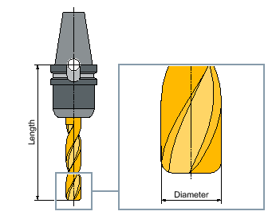End mill (Type 120)
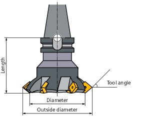Face mill (Type 140)
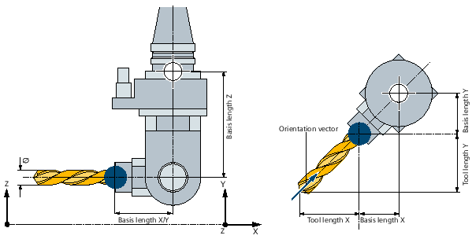Angle head cutter (Type 130)
The following example explains the relevant parameters for the angle head cutter:
Vector = (x,y,z)
Basis length Z, e.g. $TC_DP21-23[n] = (100,100,200)
Tool length, e.g. $TC_DP3-5[n] = (50,150,0)
Orientation vector, e.g. $TC_DPV/N3-5[n] = (1,1,0)* relevant for orientation functions and PMM
| Note |
To automatically create tool protection areas (collision avoidance), the following applies:
|
Drill (Type 200)
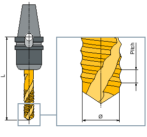Tap (Type 240)
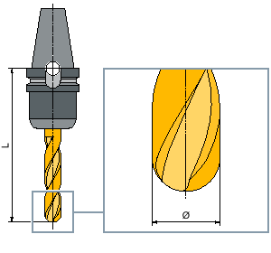3D tool with an example of a cylindrical die-sinking cutter (Type 110)
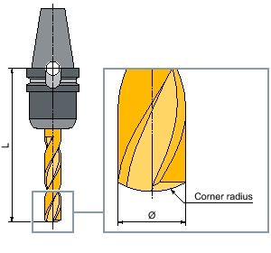3D tool type with an example of a ballhead cutter (Type 111)
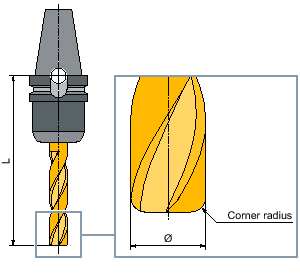3D tool with an example of an end mill with corner rounding (Type 121)
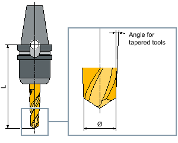3D tool type with an example of a bevel cutter (Type 155)
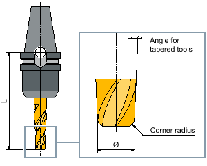3D tool with an example of a bevel cutter with corner rounding (Type 156)
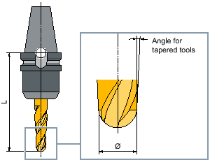3D tool with an example of a tapered die-sinking cutter (Type 157)
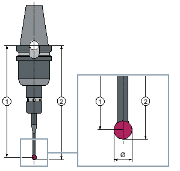① | Length m |
② | Length u |
3D probe
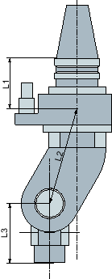Crossover head adapter
L1, L2, L3 are offset geometry lengths.
| | Machine manufacturer The tool length of the workpiece probe is measured to the center of the ball (length m) or to the ball circumference (length u). Refer to the machine manufacturer's specifications. |
| Note |
An electronic workpiece probe must be calibrated before use. |